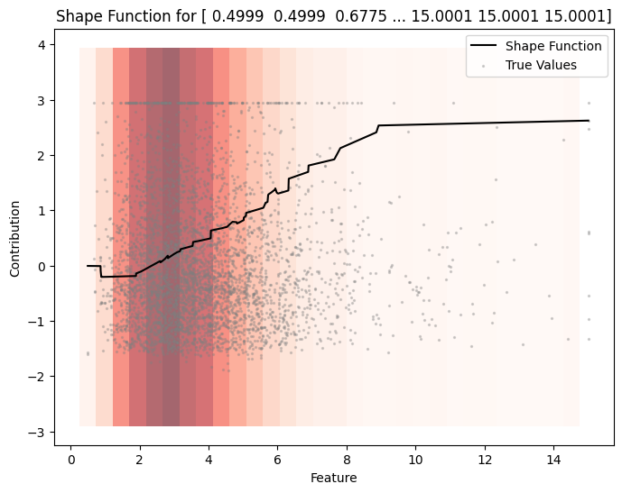
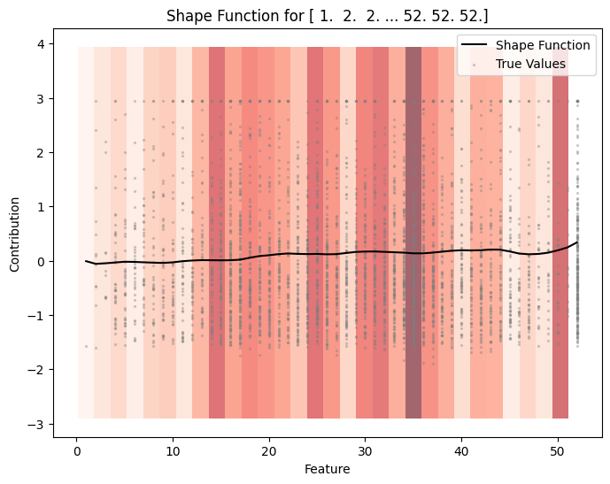
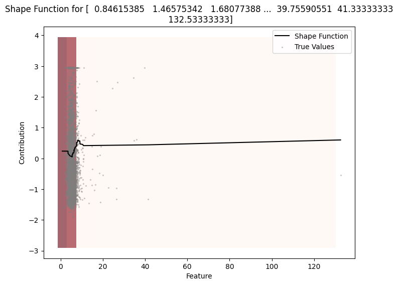
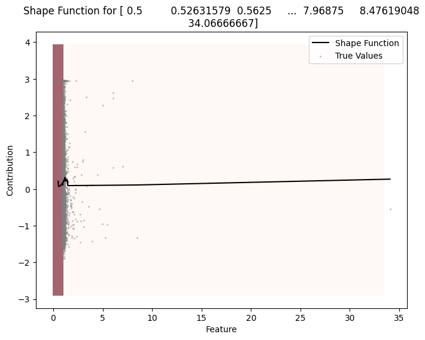
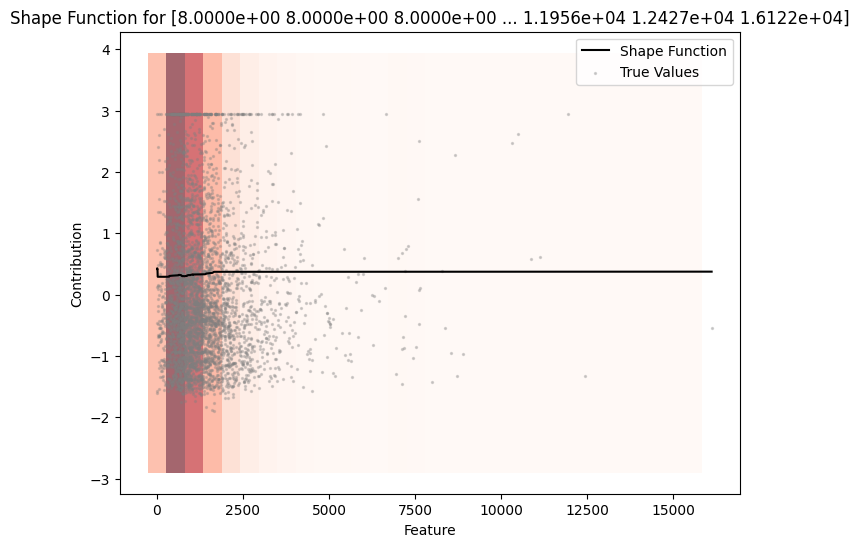
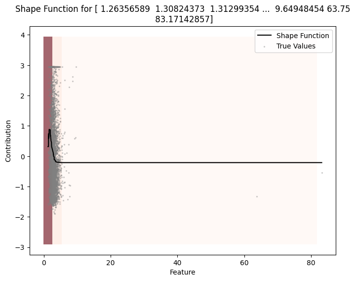
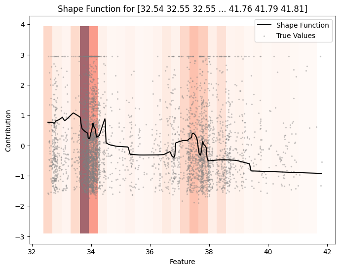
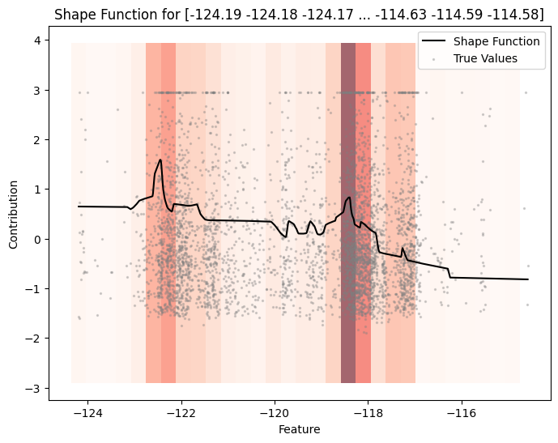

Basic Regression with NAMpy
This notebook demonstrates how to use NAMpy for regression tasks. We’ll train a Neural Additive Model (NAM) on a synthetic dataset and visualize the learned shape functions.
Setup
First, let’s import the necessary libraries.
[1]:
import numpy as np
import pandas as pd
from sklearn.datasets import fetch_california_housing, make_regression
from sklearn.model_selection import train_test_split
# Import NAMpy models
from nampy.models import NAMRegressor
# Set random seed for reproducibility
np.random.seed(42)
1. Synthetic Data Example
Let’s start with a simple synthetic dataset to understand how NAMs work.
[2]:
# Generate synthetic regression data
X, y = make_regression(
n_samples=10000,
n_features=5,
n_informative=5,
noise=10.0,
random_state=42
)
# Convert to DataFrame for better visualization
feature_names = [f'feature_{i}' for i in range(X.shape[1])]
X_df = pd.DataFrame(X, columns=feature_names)
print(f"Dataset shape: {X_df.shape}")
print(f"Target range: [{y.min():.2f}, {y.max():.2f}]")
X_df.head()
Dataset shape: (10000, 5)
Target range: [-488.33, 534.63]
[2]:
| feature_0 | feature_1 | feature_2 | feature_3 | feature_4 | |
|---|---|---|---|---|---|
| 0 | 0.015984 | -0.250427 | -0.196782 | -1.532182 | 0.511526 |
| 1 | 0.824820 | -1.183873 | 0.497429 | 0.213996 | 2.292212 |
| 2 | -1.560242 | 1.854662 | -0.054351 | -0.917028 | 1.131299 |
| 3 | -0.162704 | -0.871193 | 0.745361 | 0.093523 | 0.072153 |
| 4 | -0.438105 | -0.662554 | 1.033911 | 0.509996 | -0.407000 |
4. Real-World Dataset: California Housing
Let’s apply NAMpy to a real-world dataset - the California Housing dataset.
[ ]:
# Load California Housing dataset
housing = fetch_california_housing()
X_housing = pd.DataFrame(housing.data, columns=housing.feature_names)
y_housing = housing.target
print(f"Dataset shape: {X_housing.shape}")
print(f"\nFeature names: {housing.feature_names}")
print("\nTarget: Median house value (in $100,000s)")
X_housing.describe()
Dataset shape: (20640, 8)
Feature names: ['MedInc', 'HouseAge', 'AveRooms', 'AveBedrms', 'Population', 'AveOccup', 'Latitude', 'Longitude']
Target: Median house value (in $100,000s)
| MedInc | HouseAge | AveRooms | AveBedrms | Population | AveOccup | Latitude | Longitude | |
|---|---|---|---|---|---|---|---|---|
| count | 20640.000000 | 20640.000000 | 20640.000000 | 20640.000000 | 20640.000000 | 20640.000000 | 20640.000000 | 20640.000000 |
| mean | 3.870671 | 28.639486 | 5.429000 | 1.096675 | 1425.476744 | 3.070655 | 35.631861 | -119.569704 |
| std | 1.899822 | 12.585558 | 2.474173 | 0.473911 | 1132.462122 | 10.386050 | 2.135952 | 2.003532 |
| min | 0.499900 | 1.000000 | 0.846154 | 0.333333 | 3.000000 | 0.692308 | 32.540000 | -124.350000 |
| 25% | 2.563400 | 18.000000 | 4.440716 | 1.006079 | 787.000000 | 2.429741 | 33.930000 | -121.800000 |
| 50% | 3.534800 | 29.000000 | 5.229129 | 1.048780 | 1166.000000 | 2.818116 | 34.260000 | -118.490000 |
| 75% | 4.743250 | 37.000000 | 6.052381 | 1.099526 | 1725.000000 | 3.282261 | 37.710000 | -118.010000 |
| max | 15.000100 | 52.000000 | 141.909091 | 34.066667 | 35682.000000 | 1243.333333 | 41.950000 | -114.310000 |
[ ]:
# Split the data
X_train_h, X_test_h, y_train_h, y_test_h = train_test_split(
X_housing, y_housing, test_size=0.2, random_state=42
)
print(f"Training samples: {len(X_train_h)}")
print(f"Test samples: {len(X_test_h)}")
Training samples: 16512
Test samples: 4128
[ ]:
# Train NAM on California Housing
model_housing = NAMRegressor(
numerical_preprocessing="ple", # Piecewise Linear Encoding
n_bins=50,
dropout=0.2,
layer_sizes=[128, 64, 32],
)
model_housing.fit(
X_train_h,
y_train_h,
max_epochs=100,
lr=1e-3,
patience=10,
batch_size=256
)
GPU available: False, used: False
TPU available: False, using: 0 TPU cores
/home/ad32/miniconda3/envs/nampy/lib/python3.11/site-packages/lightning/pytorch/callbacks/model_checkpoint.py:881: Checkpoint directory /home/ad32/projects/test/NAMpy/docs/notebooks/model_checkpoints exists and is not empty.
┏━━━┳━━━━━━━━━━┳━━━━━━━━━┳━━━━━━━━┳━━━━━━━┳━━━━━━━┓ ┃ ┃ Name ┃ Type ┃ Params ┃ Mode ┃ FLOPs ┃ ┡━━━╇━━━━━━━━━━╇━━━━━━━━━╇━━━━━━━━╇━━━━━━━╇━━━━━━━┩ │ 0 │ loss_fct │ MSELoss │ 0 │ train │ 0 │ │ 1 │ model │ NAM │ 135 K │ train │ 0 │ └───┴──────────┴─────────┴────────┴───────┴───────┘
Trainable params: 135 K Non-trainable params: 0 Total params: 135 K Total estimated model params size (MB): 0 Modules in train mode: 69 Modules in eval mode: 1 Total FLOPs: 0
/home/ad32/miniconda3/envs/nampy/lib/python3.11/site-packages/lightning/pytorch/trainer/connectors/data_connector.p y:434: The 'val_dataloader' does not have many workers which may be a bottleneck. Consider increasing the value of the `num_workers` argument` to `num_workers=11` in the `DataLoader` to improve performance.
/home/ad32/miniconda3/envs/nampy/lib/python3.11/site-packages/lightning/pytorch/trainer/connectors/data_connector.p y:434: The 'train_dataloader' does not have many workers which may be a bottleneck. Consider increasing the value of the `num_workers` argument` to `num_workers=11` in the `DataLoader` to improve performance.
/home/ad32/miniconda3/envs/nampy/lib/python3.11/site-packages/lightning/pytorch/loops/fit_loop.py:534: Found 1 module(s) in eval mode at the start of training. This may lead to unexpected behavior during training. If this is intentional, you can ignore this warning.
NAMRegressor(dropout=0.2, layer_sizes=[128, 64, 32])In a Jupyter environment, please rerun this cell to show the HTML representation or trust the notebook.
On GitHub, the HTML representation is unable to render, please try loading this page with nbviewer.org.
Parameters
| dropout | 0.2 | |
| layer_sizes | [128, 64, ...] | |
| preprocessor__n_bins | 50 | |
| preprocessor__numerical_preprocessing | 'ple' | |
| preprocessor__categorical_preprocessing | 'int' | |
| preprocessor__use_decision_tree_bins | False | |
| preprocessor__binning_strategy | 'uniform' | |
| preprocessor__task | 'regression' | |
| preprocessor__cat_cutoff | 0.03 | |
| preprocessor__treat_all_integers_as_numerical | False | |
| preprocessor__degree | 3 | |
| preprocessor__knots | 12 | |
| preprocessor__quantile_preprocessing | 'feature' | |
| preprocessor__quantile_output_distribution | 'normal' | |
| preprocessor__quantile_n_quantiles | 1000 |
[ ]:
model_housing.plot(X_test_h, y_test_h)







